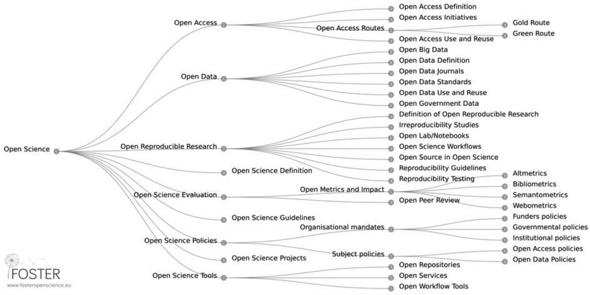
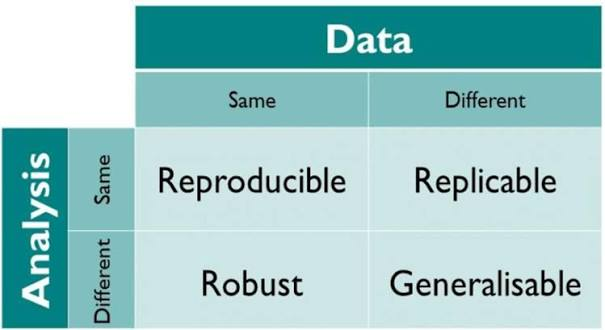
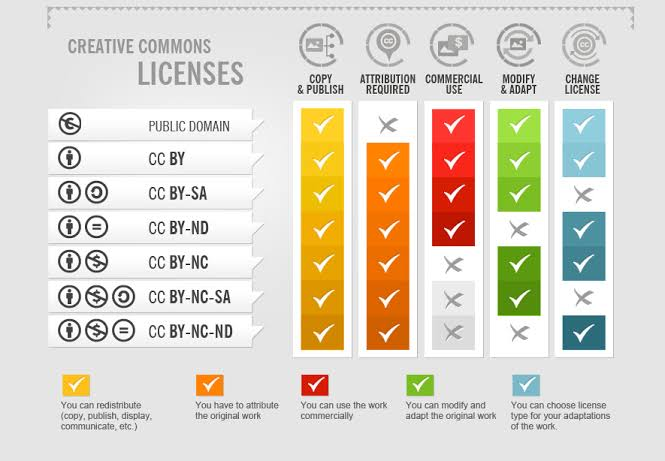
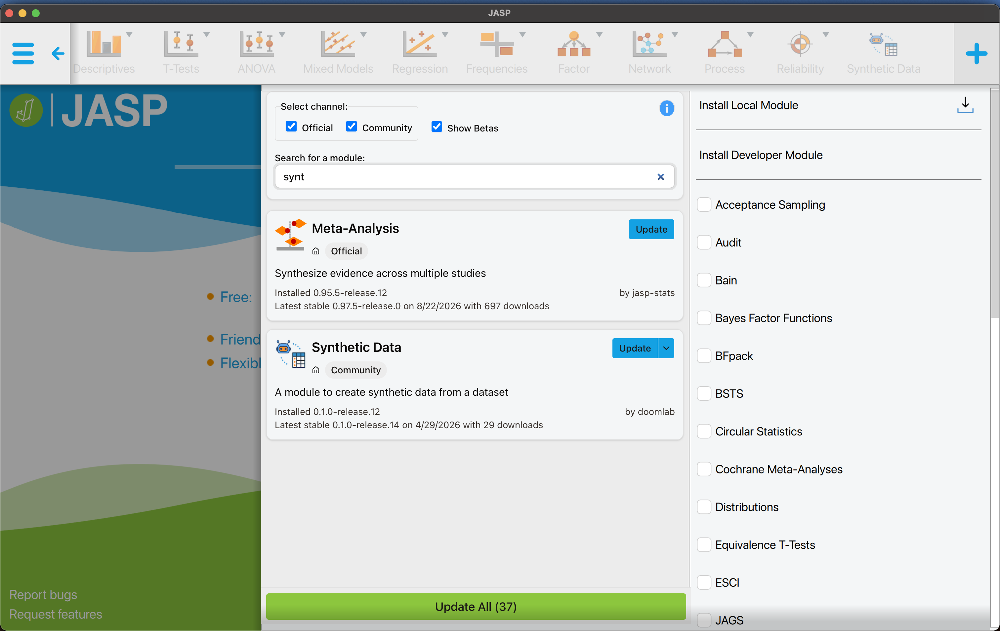
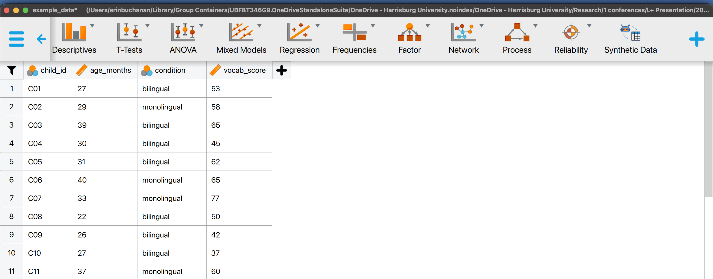
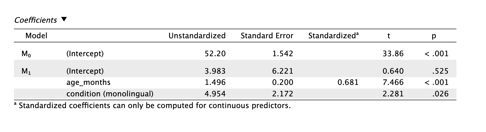
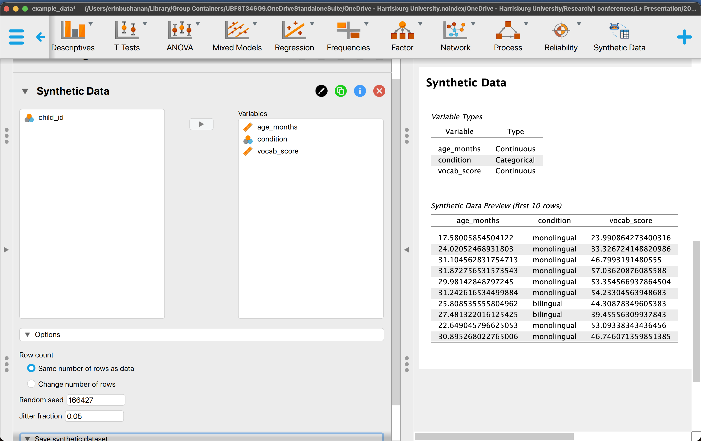
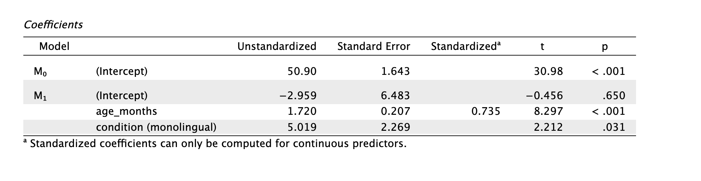

From Principles to Practices
Open science is often reduced to “sharing data,” but the broader set of practices includes:


Most open science norms were developed within WEIRD contexts
Applying them unreflectively across a cross-cultural or multi-site collaboration can reproduce inequities
Ethical review standards, definitions of consent, and norms around family involvement in decision-making vary by country and community
Data-sharing expectations from funders are frequently set in high-income countries and may not fit the constraints of every site
Ethical approval should reflect local guidelines at each site, not only the lead institution’s IRB
Local researchers are often better positioned to navigate informed consent, including family involvement and protection against coercion
Slower, more participatory timelines can conflict with publication incentives, which reward fast turnaround
Weinstein et al. (2026)
COS announcement in August 2026 about no new projects
Registration and pre-print services will still be available

Standard open data norms assume participants who can consent for themselves. Research with children complicates this at nearly every stage:
Synthetic data offers a way to balance openness and confidentiality
It preserves the statistical structure of a dataset without exposing identifiable records
Sharing realistic data structures without exposing real children’s data
Piloting and preregistering analysis pipelines before data collection is complete
Teaching statistical methods without needing access to restricted datasets
The synthpop package is a widely used implementation, alongside simstudy and faux. The general approach:
Simulate a small study: vocabulary score predicted by age (months) and condition (bilingual vs. monolingual), with some correlation between age and vocabulary.
set.seed(123)
n <- 60
real_data <- data.frame(
child_id = paste0("C", sprintf("%02d", 1:n)),
age_months = round(rnorm(n, mean = 30, sd = 6)),
condition = sample(c("bilingual", "monolingual"), n, replace = TRUE),
vocab_score = NA
)
# Vocabulary score depends on age and condition, plus noise
real_data$vocab_score <- with(
real_data,
round(10 + 1.5 * age_months +
ifelse(condition == "bilingual", -5, 0) +
rnorm(n, mean = 0, sd = 8))
)
head(real_data) child_id age_months condition vocab_score
1 C01 27 bilingual 53
2 C02 29 monolingual 58
3 C03 39 bilingual 65
4 C04 30 bilingual 45
5 C05 31 bilingual 62
6 C06 40 monolingual 65 child_id age_months condition vocab_score
Length:60 Min. :18.00 Length:60 Min. :24.00
Class :character 1st Qu.:27.00 Class :character 1st Qu.:43.75
Mode :character Median :30.00 Mode :character Median :53.00
Mean :30.42 Mean :52.20
3rd Qu.:34.00 3rd Qu.:59.00
Max. :43.00 Max. :78.00 synthpopsynthpop learns the joint structure of the real dataset, including relationships between variables, and generates new records that preserve that structure without corresponding to real individuals. child_id is dropped first since it is just an identifier.
CAUTION: Your data set has fewer observations (60) than we advise.
We suggest that there should be at least 130 observations
(100 + 10 * no. of variables used in modelling the data).
Please check your synthetic data carefully with functions
compare(), utility.tab(), and utility.gen().
Variable(s): condition have been changed for synthesis from character to factor.
Synthesis
-----------
age_months condition vocab_score age_months condition vocab_score
1 33 monolingual 58
2 27 bilingual 51
3 32 monolingual 64
4 31 bilingual 44
5 39 bilingual 65
6 29 monolingual 43synthpop age_months condition vocab_score
Min. :18.00 Length:60 Min. :24.00
1st Qu.:27.00 Class :character 1st Qu.:43.75
Median :30.00 Mode :character Median :53.00
Mean :30.42 Mean :52.20
3rd Qu.:34.00 3rd Qu.:59.00
Max. :43.00 Max. :78.00 age_months condition vocab_score
Min. :20.00 Length:60 Min. :24.00
1st Qu.:26.00 Class :character 1st Qu.:44.00
Median :30.00 Mode :character Median :53.50
Mean :29.47 Mean :53.43
3rd Qu.:33.00 3rd Qu.:62.25
Max. :39.00 Max. :78.00
Call:
lm(formula = vocab_score ~ age_months + condition, data = synth_input)
Coefficients:
(Intercept) age_months conditionmonolingual
3.983 1.496 4.954
Call:
lm(formula = vocab_score ~ age_months + condition, data = synth_data)
Coefficients:
(Intercept) age_months conditionmonolingual
0.01141 1.72512 4.70624 fauxfaux::sim_df() takes an existing data frame and generates a new synthetic dataset that preserves its means, standard deviations, and correlations among numeric variables — the same basic goal as synthpop, but using faux’s simpler multivariate-normal-based approach.
id condition age_months vocab_score
1 S001 bilingual 31.24660 38.83131
2 S002 bilingual 29.89171 46.24965
3 S003 bilingual 22.90610 48.76198
4 S004 bilingual 33.72434 60.11988
5 S005 bilingual 34.89969 48.34028
6 S006 bilingual 34.56519 55.90223 id condition age_months vocab_score
Length:120 Length:120 Min. :15.23 Min. :24.71
Class :character Class :character 1st Qu.:26.51 1st Qu.:42.39
Mode :character Mode :character Median :29.72 Median :51.50
Mean :30.30 Mean :51.95
3rd Qu.:34.09 3rd Qu.:60.24
Max. :45.66 Max. :86.47 faux age_months vocab_score
age_months 1.0000000 0.6959856
vocab_score 0.6959856 1.0000000 age_months vocab_score
age_months 1.0000000 0.7658666
vocab_score 0.7658666 1.0000000
Call:
lm(formula = vocab_score ~ age_months + condition, data = real_data)
Coefficients:
(Intercept) age_months conditionmonolingual
3.983 1.496 4.954
Call:
lm(formula = vocab_score ~ age_months + condition, data = faux_synth)
Coefficients:
(Intercept) age_months conditionmonolingual
3.720 1.530 3.751 sim_design() remains useful separately, for the case where there is no existing dataset yet and a study is being simulated from specified effect sizes ahead of data collection (e.g., for a power analysis or preregistration).





Where materials are deposited and how they’re licensed shapes whether they can actually be reused
OSF’s role is changing; Zenodo, Figshare, Dataverse, and TROLLing are the practical landing spots for active projects going forward
Cross-cultural and multi-site collaborations need locally embedded practices, not a single norm applied everywhere
Synthetic data (via synthpop or faux) offers a way to prototype, teach, and preregister analysis pipelines without exposing real data